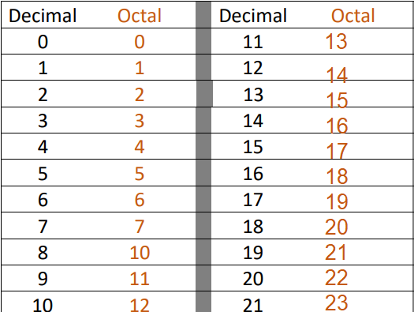
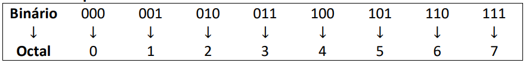

Sistema de numeração Octal e suas Conversões
Ínicio
O sistema Octal é bem simples como os outros todos os números são representados de 0 a 7. Para representar
números de valor superior a esse se pega e bota o 1, desta forma: 10=8; 15=12 e assim sucessivamente.

Conversão de base 10 para base 8
Regras sucessivas por 8
- Fazer a divisão do número decimal por 8 e guardar o resto.
- Dividir o quociente novamente por 8 e guardar o resto.
- Repetir o processo até termos o quociente menor do que 8.
- O número na Base 8 será a sequência de restos obtidos
juntamente com o último quociente, começando pela direita.
Conversão de base 8 para base 10
É a mesma regra da conversão de Base 2 para Base 10. Apenas muda para
potências de 8.
Essa é a regra de decomposição por 8
Cada dígito octal deve ser multiplicado por potências de 8. O último dígito é multiplicado por 80, o penúltimo
por 81, o antepenúltimo por 82 e, assim, sucessivamente.

Conversão: Base 2 para base 8
e 8 é uma potência de 2, isto é, 8 = 23. Com isso, podemos dizer que precisamos de 3 dígitos binários para
designar 1 dígito octal. Assim, elaboramos uma tabela de equivalências em que escrevemos todos os binários com 3
dígitos acrescentando zeros à esquerda daqueles que com 1 e 2 dígitos.
Tabela de equivalência

Regra da conversão de Base base 8
- Separar o número binário em grupos de 3 dígitos da direita para a esquerda. Se necessário, acrescentar zeros à esquerda caso algum grupo não tenha 3 dígitos.
- A partir da tabela acima, substituir cada grupo binário pelo octal correspondente.